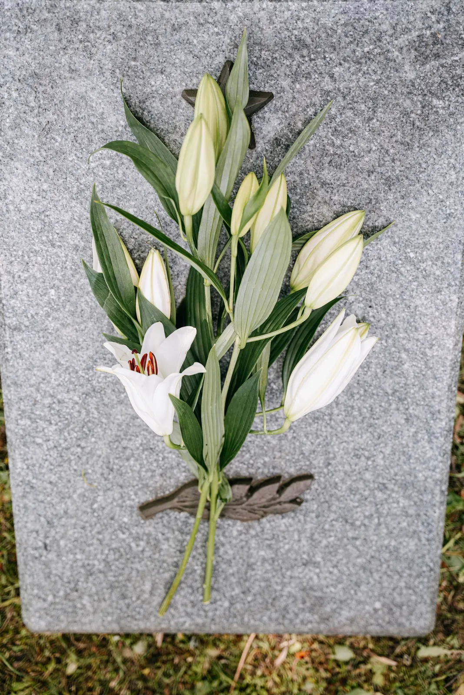
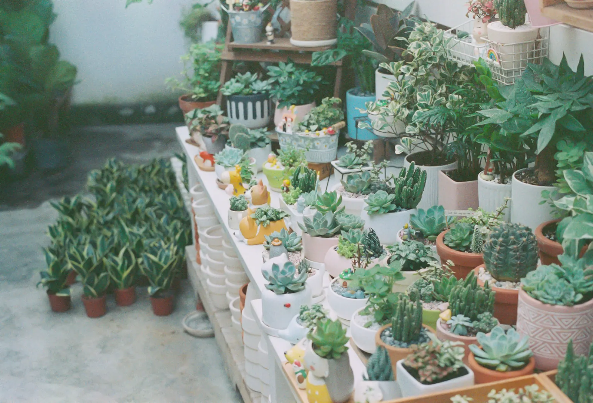

Květinářství v Liberci
Rozkvete až u vás.
Kytice vážeme z poupat. Rozvinou se až doma, ve vaší váze.
- Ráno vybereme poupata a uvážeme kytici.
- Odpoledne si ji odnesete, ještě zavřenou.
- Doma se rozvine. Přesně takhle.
Posuňte stránku a poupě se rozvine
Rozkvetlá kytice je nejkrásnější první den. Ta naše jím teprve začíná, protože nejhezčí chvíli prožije u vás doma, ne ve výloze.
Pudrová M · 15 stonků
Kytice na míru
Uvažte si kytici.
Tři volby a uvidíte ji. Ráno toho dne ji uvážeme z poupat, aby se rozvinula až u vás.
od 1 090 Kč
Napsat vzkaz na kartičku SvatbyKytice pro nevěstu, korsáže i stoly. Barvy projdeme na schůzce, alespoň měsíc předem.
SvatbyKytice pro nevěstu, korsáže i stoly. Barvy projdeme na schůzce, alespoň měsíc předem.

Smuteční vazbaVěnce a kytice na rozloučenou. Domluvíme po telefonu a dovezeme, kam potřebujete.
Pokojové rostlinyPoradíme, co vydrží na severním okně a co snese, když na zalévání zapomenete.Těším se na večer.
— M.
Pudrová · M 15 stonků · od 1 090 Kč · změnit
Otevřeno
- Pondělí až pátek
- 8:00–18:00
- Sobota
- 8:00–12:00
- Neděle
- zavřeno
Kde nás najdete
Květná 9, Liberec
naproti zastávce tramvaje
Napište
kytice@poupe.example
Svatby domlouváme alespoň měsíc předem.